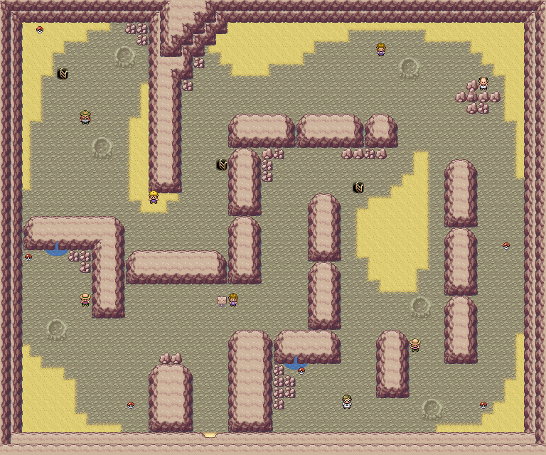
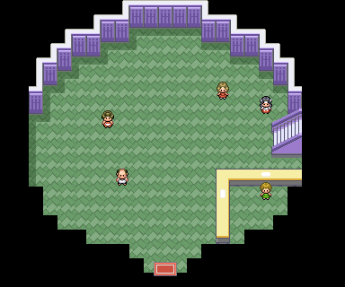
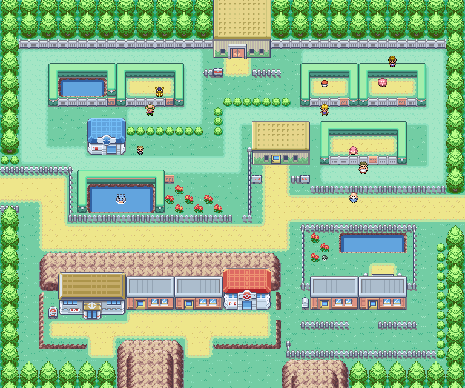
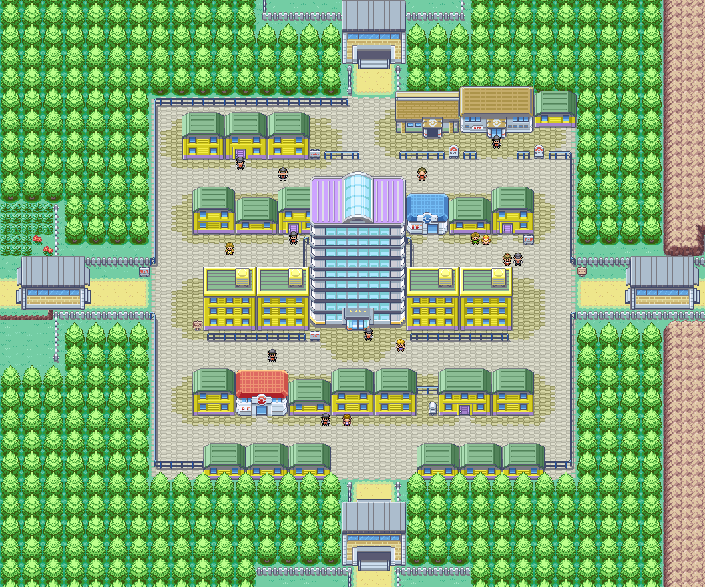
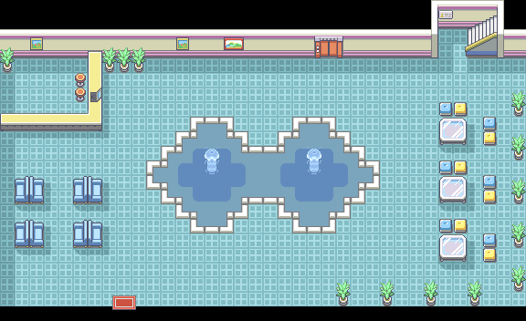
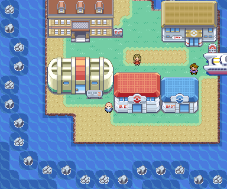
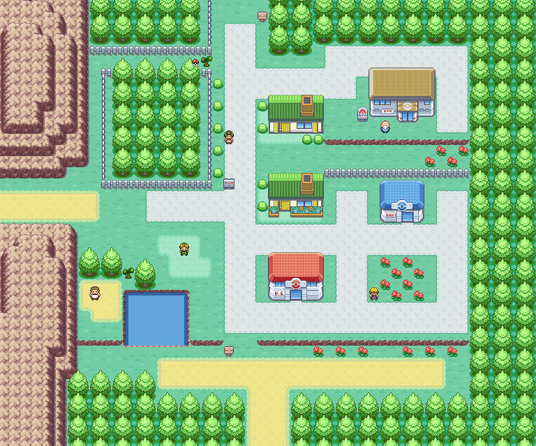
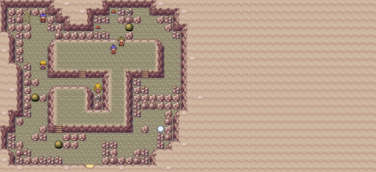
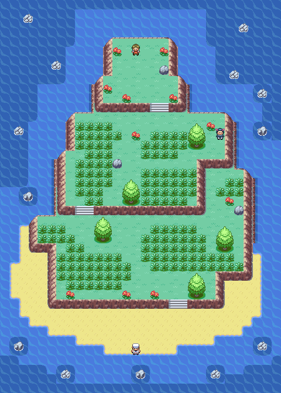
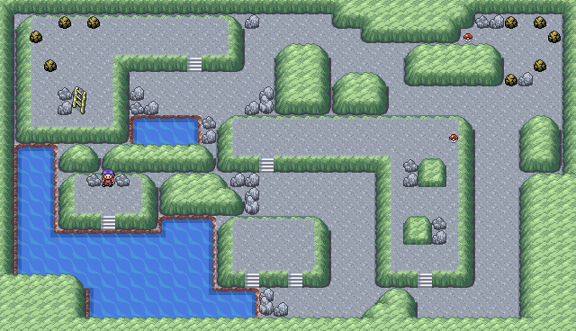

Walkthrough
A start-to-finish guide to FireRed Reforged — the full Kanto journey, the Sevii Islands, and all of the bonus content. It highlights what Reforged changes from vanilla FireRed and links to the data sections for exact trainer positions, teams, and items. For precise spots on any map, open that map in Locations and hover or click.
1 · Pallet Town — a new adventure

Leave your house and step into the grass; PROF. OAK stops you and takes you to his lab, where your rival is waiting. Pick your starter — FireRed Reforged keeps the classic trio, Bulbasaur, Charmander, or Squirtle. Your rival, however, does not pick a starter: Oak hands him an EEVEE, which he evolves into whichever Eeveelution counters your choice, so every rival fight is an uphill type match-up (Vaporeon vs. Charmander, Jolteon vs. Squirtle, Flareon vs. Bulbasaur).
Reforged note. Before you leave, a Gentleman in Pallet Town hands out unlimited Rare Candy / Master Balls / Full Restores / Repels / Elixirs — the Nuzlocke & challenge-run supply stand. You'll also have chosen Normal or Hard mode at the start (see Extras). Every Pokémon in the game is catchable, and your partner follows you around the field, HG/SS-style.
2 · Route 1 to Pewter City — Brock


Head north through Route 1 to Viridian City, where the mart clerk hands you OAK'S PARCEL. Deliver it back to the lab to receive the Pokédex and Poké Balls, then return north, up Route 2 into Viridian Forest — a great early net of Bug-types and, uniquely in Reforged, Pikachu, which appears here as well as at the Power Plant. Emerge in Pewter City and take the PEWTER GYM.
Brock leads with Geodude and an ace Onix (Lv 12) that now carries a wider movepool than vanilla — a Water/Grass starter or a caught Mankey/Nidoran makes this simple. Winning earns the Boulder Badge and TM Rock Tomb. Old Man's catching tutorial and the Museum are here too.
3 · Mt. Moon to Cerulean — Misty


Route 3 is packed with trainers; at its end lies Mt. Moon, home to Zubat, Geodude and the fossil choice (Helix or Dome — you can revive the other later, and Fuchsia gives you the mon from the fossil you didn't pick). Beat the Rocket at the exit and drop into Cerulean City.
The CERULEAN GYM is Misty, whose ace Starmie (Lv 21) hits hard — an Electric- or Grass-type is strongly recommended. Take the Cascade Badge, then clear Nugget Bridge and the Rocket to the north, and visit Bill on Route 25 to earn the S.S. Ticket. Reforged relocates the Old Rod to a fishing guru back in Viridian City if you want early fish.
4 · Vermilion City — Lt. Surge & the S.S. Anne


Head down Route 5 and Route 6 to Vermilion City. Board the S.S. Anne, work through its trainers and your rival, and receive HM01 Cut from the Captain — note that in Reforged every HM move can be forgotten like a normal move. Cut the tree to reach the VERMILION GYM. Solve the trash-can switches, then face Lt. Surge and his lone, brutal Raichu (Lv 29); a Ground-type (Diglett from Diglett's Cave, just east on Route 11) trivializes it. Grab the Thunder Badge. The Good Rod is given here.
5 · Rock Tunnel to Celadon — Erika & Team Rocket


From Cerulean, take Route 9 and Route 10 through the pitch-black Rock Tunnel (Flash helps) to Lavender Town, then west on Route 8 to Celadon City. The Department Store is the best shop in Kanto — and in Reforged its counters stock every evolution stone and item in one place. From here you can tackle gyms 4–7 in a flexible order; Reforged scales gyms 4–7 to the order you beat them, so there's no wrong path.
The CELADON GYM is Erika (ace Vileplume Lv 35) — bring Fire or Flying. Then dive into the Rocket Hideout under the Game Corner, beat Giovanni's first stand, and take the Silph Scope and Hideout TM (relocated to Flamethrower in Reforged). Every trainer and item down there is marked in Locations.
6 · Pokémon Tower to Fuchsia — Koga & Janine


Use the Silph Scope in the Pokémon Tower in Lavender to lay the Marowak ghost to rest and receive the Poké Flute, then wake the Snorlax blocking Route 12. Head down through Route 13–Route 15 or ride Cycling Road to Fuchsia City.
The FUCHSIA GYM is Koga (ace Venomoth Lv 43). Reforged adds his daughter Janine as an optional tribute trainer inside the gym, and clears out the invisible-wall cut trees so you can reach the leader from either side. Grab the Soul Badge. Fuchsia also hands you the fossil Pokémon you didn't choose at Mt. Moon, and the Safari Zone (HM03 Surf, the Gold Teeth, and Strength) is right here.
7 · Saffron City — Silph Co. & Sabrina


Return to Saffron City — the thirsty guards let you through once you bring them TEA from the old woman in the Celadon Condominiums. Team Rocket has seized Silph Co. Climb all eleven floors, grab the warp-tile loot, and beat Giovanni's second stand to free the president and receive a Lapras (boosted to Lv 35 in Reforged). Then challenge the SAFFRON GYM: Sabrina and her ace Alakazam (Lv 50) — Dark and Ghost moves are your friends (and remember Reforged uses the Gen 3 split where Ghost is special and Dark is physical). Win the Marsh Badge. The Fighting Dojo is next door; its master gives a Hitmon, and Reforged's Brick Piece here lets a Tyrogue evolve into any of the three.
8 · Cinnabar Island — Blaine


Surf south from Pallet down Route 21 (Reforged scatters starters in the northern grass here) to Cinnabar Island. The burned-down Pokémon Mansion hides the Secret Key and plenty of items; grab it, then open the CINNABAR GYM. Blaine's ace is Magmar (Lv 53) — Water, Rock or Ground answers him. Take the Volcano Badge. This is also where you can revive fossils and, later, hunt Reforged's custom static legends around the Sevii chain.
9 · Viridian Gym — Giovanni

With seven badges, the VIRIDIAN GYM finally opens — and its leader is Giovanni himself, running a Ground team led by Rhydon (Lv 55). Water and Grass sweep him. Reforged change: Giovanni no longer dissolves his gym and flees after losing — he stays put, which sets up the postgame rematch ladder. Claim the Earth Badge, your eighth, and the road to the League is open.
10 · Victory Road & the Elite Four


Show all eight badges at the Route 22 gate, cross Route 23 and climb Victory Road (Strength puzzles) to the Indigo Plateau. Stock up, then take the ELITE FOUR in order: Lorelei (Ice), Bruno (Fighting/Rock), Agatha (Ghost/Poison) and Lance (Dragon), then your rival as Champion — his team is built around the Eeveelution that has countered you all game plus a full supporting cast. Beat him and you enter the Hall of Fame… which is where FireRed Reforged really begins. Afterwards, visit Prof. Oak to receive the National Pokédex — no minimum number of Pokémon required (you need to have visited One Island). Randomized saves that include Gen 2 or 3 already have it from the start.
11 · The Sevii Islands

You can visit One, Two and Three Island during the main story (help Bill and Celio). Post-Champion, Celio's network quest sends you for the Ruby (Mt. Ember, past two Rockets) and the Sapphire (the Dotted Hole on Six Island — a Rocket snatches it, so chase him through the Rocket Warehouse on Five Island to take it back). Completing the link grants the Rainbow Pass and opens the full island chain. Two Island's market and the Celadon store cover evolution items; a post-Champion Two Island shop adds the incenses used to breed baby Pokémon.
Reforged overhaul: once you have the Rainbow Pass, islands Four through Seven are re-seeded with Gen 2 and Gen 3 wilds (islands 1–3 stay pure Kanto), and their trainers are rebuilt with tougher Johto/Hoenn teams. The Tanoby Ruins chambers hide the Regi trio, and the legendary beasts and other legends stand as static encounters across the chain (see Legendary Hunt).
12 · Postgame — the gated rematch road
This is the heart of Reforged's endgame: a gated ladder of ever-harder rematches. Full team lists live under Rematches; the path is:
- Beat the Elite Four (done) to unlock the Kanto gym rematches — ace Lv 70, each leader running their mixed-generation Tier 2 team.
- Re-beat all eight leaders (Giovanni included — he stayed!) to reopen the Elite Four as a Lv 78→82 ladder. Lorelei blocks the League until all eight are done.
- Beat the Elite Four rematch to unlock the ferry to the Johto Isles.
- Clear the sixteen Johto leaders and the Kanto gyms jump to Tier 3 (ace Lv 92); re-beat all eight again to face the Tier 3 Elite Four, ending on a Level 100 Champion — the hardest fight in the game.
13 · The Johto Isles

After the Elite Four rematch, sail from One Island Harbor to the Johto Isles — eight themed islands, each with two Gym Leaders: a Johto leader at the far end and a Hoenn co-leader. Beat both, then talk to the isle's Sailor to move on. The order is Skyreach (Falkner + Winona) → Chitin (Bugsy + Wattson) → Meadowmoo (Whitney + Norman) → Hollow (Morty + Tate&Liza) → Ironfist (Chuck + Brawly) → Foundry (Jasmine + Roxanne) → Glacier (Pryce + Wallace) → Wyrmspire (Clair + Flannery). Aces sit at Lv 88, the game's level cap, and each isle carries its own themed wilds — so this is prime hunting for Johto/Hoenn species. Clearing Clair & Flannery completes the circuit and promotes the Kanto gyms to Tier 3.
14 · Legendary hunt

Reforged places a full set of static legendary encounters across the world — each one stands on the map (save first!). The roster:
- Kanto birds — Articuno (Seafoam Islands), Zapdos (Power Plant), Moltres (Mt. Ember).
- Mewtwo — Cerulean Cave; the guard steps aside once you finish Celio's Ruby & Sapphire network quest.
- Legendary beasts — Raikou (Five Isle Meadow), Entei (Mt. Ember's slopes), Suicune (beside the spring at Cape Brink).
- Celebi — Berry Forest on Three Island.
- Weather trio — Groudon (the Ruby's chamber at the bottom of Ruby Path), Kyogre (the open sea of the Water Labyrinth), Rayquaza (the summit of Sevault Canyon).
- Latias & Latios — the shoreline of Treasure Beach on One Island.
- Regi trio — sealed in the Tanoby Ruins chambers.
- Jirachi — beside the Memorial Pillar on Five Island.
- Ho-Oh & Lugia (Navel Rock) and Deoxys (Birth Island) — their event tickets are granted in the postgame.
Exact tiles are marked in Locations, and every species' catch spots are under Locations on its card in the Pokédex.
15 · The Mew quest

Complete the Kanto Pokédex to 150 and become Champion, then visit Prof. Oak — he'll acknowledge your dex and send you to the Pokémon Mansion on Cinnabar, where a secret battle with Oak himself (his birds are Lv 77–81) guards the way to a Lv 70 Mew static on the basement floor. Catch it to complete the original 151. Mew obeys you regardless of badges.
16 · Extras & challenge features
- Hard Mode — chosen at game start. Level caps track your badge count (and, in the postgame, the rematch ladder: 70 → 82 → 88 → 92), the SET battle style is forced, you can't use items in trainer battles, and fainting is permanent — a fainted Pokémon can't be revived, healed, or stashed back into rotation.
- Randomizer — asked right after the difficulty prompt. A settings screen lets you shuffle wild Pokémon, route trainers, bosses, gifts (starter included), the legendary statics and field items independently, with optional similar-strength matching, a legendary-pool switch, EVERY SLOT (each slot rolls its own species instead of one swap everywhere) and GENS (draw only from Gen 1, 2, 3 or any mix). Including Gen 2 or 3 gives you the National Pokédex from the start. The seed and settings are stored in the save file, so the same save always plays the same world; your Trainer Card shows the seed. Bosses keep their scripted movesets on whatever they become.
- Nuzlocke supply — the Pallet Town Gentleman hands out Rare Candies, Master Balls, Full Restores, Max Repels and Max Elixirs (topped up to 999 each, repeatable) for self-imposed runs.
- Key-item relocations — the Old Rod is with a fishing guru in Viridian City, the Good Rod in Vermilion, and the Exp. Share aide (Route 15 gate) hands it over with no Pokédex requirement.
- Evolution items in one place — the Celadon Department Store counter and Two Island market stock every stone and trade-evo item (usable straight from the bag), plus incenses for breeding baby Pokémon.
- Brick Piece / Tyrogue — from the Saffron Fighting Dojo master, letting Tyrogue evolve into any of the three Hitmons.
- Quality of life — forgettable HMs, reusable Repel prompt, indoor running, instant text, an IV/EV summary viewer, and following Pokémon.